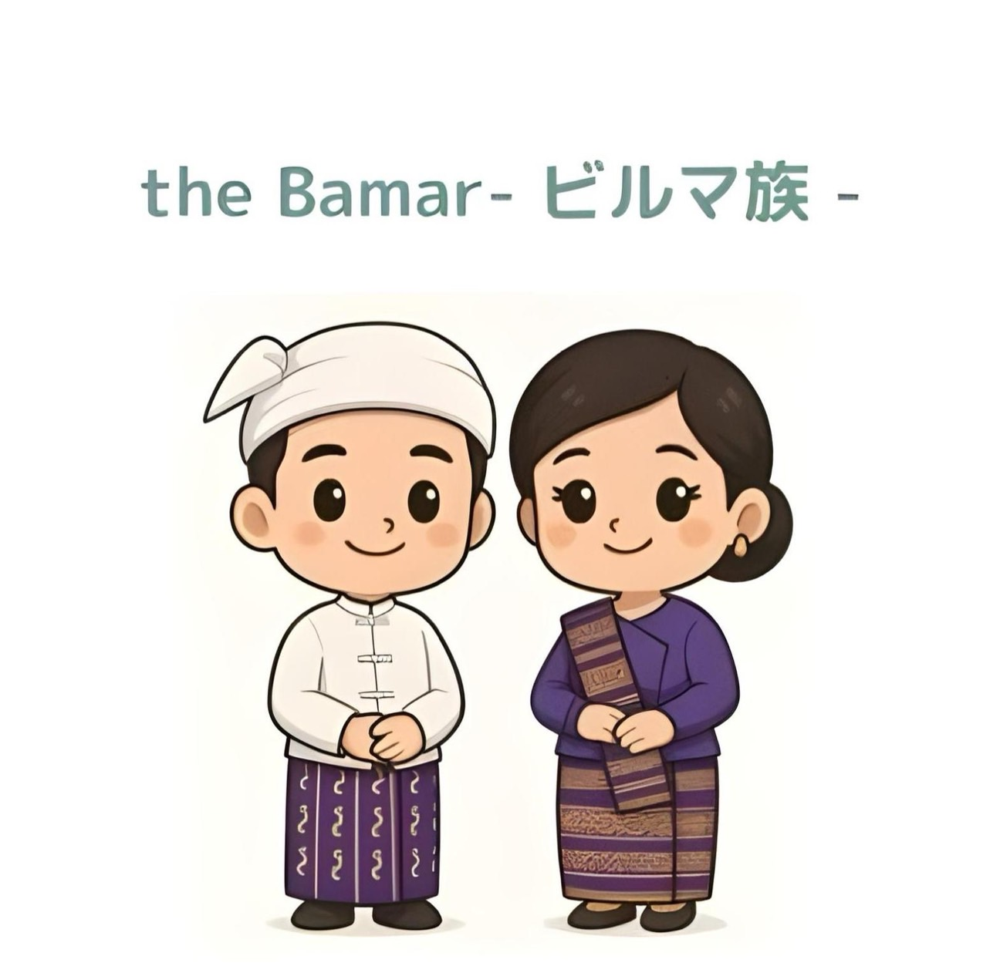
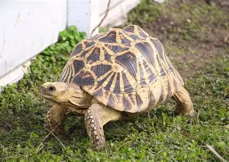
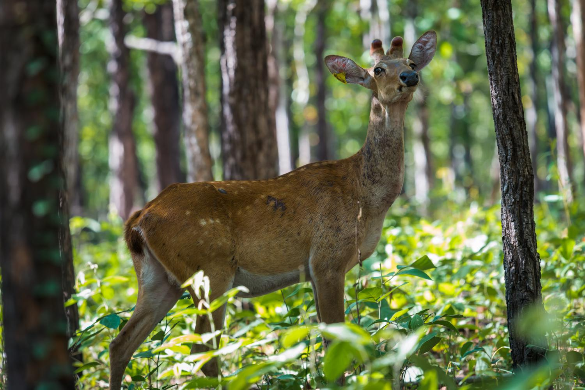
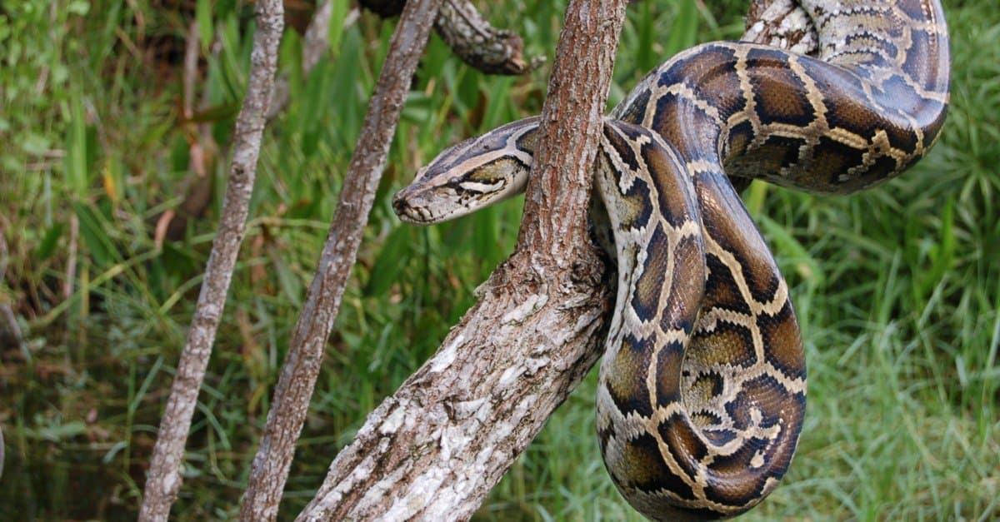

芸術と工芸
漆器（バガン）、木彫、マリオネット人形、金箔工芸で有名です。
ビルマ族はミャンマー最大の民族であり、中央平原に集中しています。彼らの歴史、上座部仏教の伝統、そして河川を基盤とした文化は、この国の文化を強く形作っています。

エーヤワディー川流域を中心に、ビルマ族のコミュニティは稲作、工芸、貿易に従事しています。伝統的なビルマ文化は、パゴダ祭り、漆器、人形劇、宮廷音楽に反映されています。
バマー族の伝統衣装は男女共に*ロンジー*で、シンプルで上品なトップスと合わせて着用されます。 男性は*タイクポン*（ジャケット）と*ガウンバウン*（頭飾り）を着用し、女性はフィットしたブラウスとロンジーを組み合わせ、 上品さと控えめさを表現します。

漆器（バガン）、木彫、マリオネット人形、金箔工芸で有名です。
主要な祭りは仏教暦と川の季節に従って行われます。
何千もの寺院や仏塔がある古代都市
工芸品と修道院で有名な文化の中心地
バマー族の中心地の生命線
バランスのとれた風味と多様な食感で知られる、バマー族の中心地の伝統料理。
マンダレーと中央バマル乾燥地帯の象徴的な野生生物


